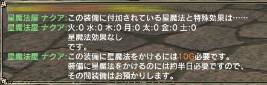
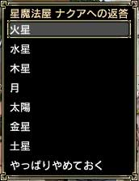

まず町のどこかにいる「星魔法屋」を探します。「星魔法屋」を見つけたら、「星魔法屋」に対しトレードを行います。トレードの時は、星をかけたいアイテムを1つだけトレードするようにしてください。複数のアイテムは受け付けてもらえません。また指輪など特定の装備品には星をかけることができず、断られる場合があります。
トレードが成立すると、その装備品にかかっている星の情報と、次に星をかけるのに必要なお金が表示されます。その次にどの星をかけるのか選択するウィンドウが出てきますので、かけたい星を選んでください。
すると星をかけるのに必要な期日を「星魔法屋」が教えてくれますので、その期間待って受け取りに行けば星かけは終了です。
なお受け取るときは「星魔法屋」に話しかけるだけで十分です。しかもどこの町の「星魔法屋」からでも受け取れるので非常に便利です。

(装備品の情報)

(どの星をかけるか) |